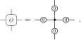

9. Matrix Product Operators#
If Matrix Product States are a tensor network way of representing quantum states in one dimensions, we can similarly use tensor networks to represent the operators that act on these states. Matrix Product Operators (MPOs) form a structured and convenient description of such operators, that can capture most (if not all) relevant operators. Additionally, they also form a natural way of representing the transfer matrix of a 2D statistical mechanical system, and can even be used to study higher dimensional systems by mapping them to quasi-1D systems.
In general, an MPO is a chain of tensors, where each tensor has two physical indices and two virtual indices:
9.1. Statistical Mechanics in 2D#
Before discussing one-dimensional transfer matrices, let us first consider how partition functions of two-dimensional classical many-body systems can be naturally represented as a tensor network. To this end, consider the partition function of the classical Ising model,
where \(s_i\) denotes a configuration of spins, and \(H(\{s_i\})\) is the corresponding energy, as determined by the Hamiltonian:
where the first sum is over nearest neighbors.
9.1.1. Partition Functions as Tensor Networks#
As the expression for the partition function is an exponential of a sum, we can also write it as a product of exponentials, which can be reduced to the following network:

Here, the black dots at the vertices represent Kronecker \(\delta\)-tensors,
{kind=link}
and the matrices \(t\) encode the Boltzmann weights associated to each nearest-neighbor interaction,
{kind=link}
It is then simple, albeit somewhat involved to check that contracting this network gives rise to the partition function, where the sum over all configurations is converted into the summations in the contractions of the network. Finally, it is more common to absorb the edge tensors into the vertex tensors by explicitly contracting them, such that the remaining network consists of tensors at the vertices only:
{kind=link}
Note
Because there are two edges per vertex, an intuitive way of absorbing the edge tensors is to absorb for example the left and bottom edge tensors into the vertex tensor. However, this leads to a slightly asymmetric form, and more commonly the square root \(q\) of the Boltzmann matrices is taken, such that each vertex tensor absorbs such a factor from each of the edges, resulting in a rotation-invariant form.
{kind=link}
9.1.2. Transfer Matrices#
In order to then evaluate the partition function, we can use the Transfer-matrix method, which is a technique that splits the two-dimensional network into rows (or columns) of so-called transfer matrices, which are already represented as MPOs. In fact, this method has even led to the famous exact solution of the two-dimensional Ising model by Onsager. [Ons44].
In the context of tensor networks, this technique is even useful beyond exactly solvable cases, as efficient algorithms exist to determine the product of an MPO with an MPS in an approximate manner. This allows us to efficiently split the computation of the partition function in a sequence of one-dimensional contractions, thus reducing the complexity of the problem by solving it layer by layer. For example, one can resort to boundary MPS techniques [ZaunerStauberVF+18].

9.1.3. Thermodynamic Limit#
Importantly, this technique is not limited to finite systems, and in fact allows for the computation of the partition function of systems directly in the thermodynamic limit, alleviating the need to consider finite-size effects and extrapolation techniques. The key insight that allows for this is that the partition function may be written as
where \(T\) is the row-to-row transfer matrix, and \(N\) is the number of rows (or columns) in the network. If we then consider the spectral decomposition of the transfer matrix, we can easily show that as the number of rows goes to infinity, the largest eigenvalue of the transfer matrix dominates, and the partition function is given by
where \(\lambda_{\mathrm{max}}\) is the largest eigenvalue of the transfer matrix. In other words, the partition function can be computed if it is possible to find the largest eigenvalue of the transfer matrix, for which efficient algorithms exist.
9.1.4. Expectation Values#
In order to compute relevant quantities for such systems, we can verify that the expectation value of an operator \(O\) is given by the weighing the value of that operator for a given microstate, with the probability of that microstate:
For a local operator \(O_i\), this can again be written as a tensor network, where a single vertex tensor is exchanged for \(M\prime_{ijkl} = O_i \delta_{ijkl}\), and then absorbing the remaining edge tensors:
Using this network, the expectation value can be computed by first contracting the top and bottom part, replacing them by their fixed-point MPS representations, and then contracting the remaining MPS-MPO-MPS sandwich. This is achieved by similarly contracting the left and right part, replacing them by their fixed-point tensors, which are commonly called the environments \(G_L\) and \(G_R\), respectively. The final resulting network is then just a local network, which can be contracted efficiently.
Note
This process of sequentally reducing the dimensionality of the network can even be further extended, where 3D systems can be studied by first determining a 2D boundary PEPS, for which a 1D boundary MPS can be determined, which admits 0D boundary tensors. This kind of algorithms are commonly referred to as boundary methods.
9.2. Quantum Mechanics in 1+1D#
For quantum systems in one spatial dimension, the construction of MPOs boils down to the ability to write a sum of local operators in MPO-form. The resulting operator has a very specific structure, and is often referred to as a Jordan block MPO.
9.2.1. Jordan Block MPOs#
For example, if we consider the Transverse-field Ising model,
it can be represented as an MPO through the (operator-valued) matrix,
along with the boundary vectors,
The Hamiltonian on \(N\) sites is then given by the contraction
Note
While the above example can be constructed from building blocks that are strictly local operators, this is not always the case, especially when symmetries are involved. In those cases, the elements of the matrix \(W\) have additional virtual legs that are contracted between different sites.
9.2.2. Finite-State Machines#
An intuitive approach to construct such MPOs is to consider the sum of local terms by virtue of a finite-state machine. This is a mathematical model of computation that consists of a finite set of states, and a set of transitions between those states. In the context of MPOs, this is realised by associating each virtual level with a state, and each transition then corresponds to applying a local operator. In that regard, the MPO is then a representation of the state of the finite-state machine, and the matrix \(W\) is the transition matrix of the machine.
In general, the matrix \(W\) can then be thought of as a block matrix with entries
which corresponds to the finite-state diagram:
It can then be shown that this MPO generates all single-site local operators \(D\), two-site operators \(CB\), three-site operators \(CAB\), and so on. In other words, the MPO is a representation of the sum of all local operators, and by carefully extending the structure of the blocks \(A\), \(B\), \(C\), and \(D\), it is possible to construct MPOs that represent sums of generic local terms, and even approximate long-range interactions by a sum of exponentials.
9.2.3. Expectation Values#
In order to compute expectation values of such MPOs, we can use the same technique as before, and sandwich the MPO between two MPSs.
However, care must be taken when the goal is to determine a local expectation value density, as this is not necessarily well-defined. In fact, the MPO-MPS sandwich will always lead to the total energy, and in order to consistently define local contributions, a choice must be made how to distribute this among the sites. For example, even in the case of two-site local operators, it is unclear if this local expectation value should be accredited to the left, right, or both sites. In the implementation of MPSKit, the chosen convention is to distribute the expectation value evenly among its starting and ending point, in order to not overcount contributions of long-range interactions.
Thus, the computation of local expectation values is done by first contracting the left and right ends of the network, and denoting the resulting tensors as \(G_L\) and \(G_R\), respectively. These tensors are typically referred to as the environments of the network, as they depict the part of the network that is not under consideration, and that is thus considered as constant.
Then, the local expectation value is given by the mean of the contraction with the first row of \(M\), which is equivalent to all terms starting at that site, and the last column of \(M\), which is equivalent to all terms ending at that site.
Again, it is instructive to write this out explicitly for some small examples to gain some intuition.
9.2.4. Jordan MPOs in the Thermodynamic Limit#
In the thermodynamic limit, the same MPO construction can be used to represent the infinite sum of local terms. However, special care must be taken when considering expectation values, as now only local expectation values are well-defined, and the total energy diverges with the system size.
This is achieved by considering a regularization of the environment tensors, such that the divergent parts are already removed. This construction can be found in more detail in [].
9.2.5. Quasi-1D Systems#
Finally, it is worth noting that the MPO construction can also be used to study two-dimensional systems, by mapping them to quasi-one-dimensional systems. This is typically achieved by imposing periodic boundary conditions in one of the spatial directions, and then snaking an MPS through the resulting lattice. In effect, this leads to a one-dimensional model with longer-range interactions, which can then be studied using the standard MPS techniques. However, the no free lunch theorem applies here as well, and the resulting model will typically require a bond dimension that grows exponentially with the periodic system size, in order to achieve the area law of entanglement in two-dimensional systems.
9.3. Conclusion#
In conclusion, Matrix Product Operators are a powerful tool to represent quantum operators as well as transfer matrices. They allow for efficient and versatile expressions of expectation values, and form the building block for many tensor network algorithms, both in (1+1) or (2+0) dimensions, as well as in higher dimensions.